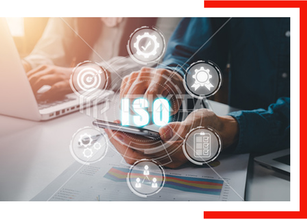

Design
トップクラスの設計力
当社では、様々な光学設計ソフトを取り入れています。CodeVやZEMAX、迷光解析ソフトなど、状況に応じて様々なソフトを使用し、高水準の設計を行っております。
FEATURE
Design
当社では、様々な光学設計ソフトを取り入れています。CodeVやZEMAX、迷光解析ソフトなど、状況に応じて様々なソフトを使用し、高水準の設計を行っております。

Quality
当社は品質マネジメントの国際規格である「ISO9001」の認証を取得しております。「ISO9001」の品質保証システムに基づいた、高品質な製品を生産いたします。
Support
電子顕微鏡、恒温槽装置、偏心測定器、コリメーターなどの検査機器を活用することで、早期の問題解決を実現するなど、スピーディな技術サポートが可能です。
Cost
国内外のネットワークを駆使するとともに、現地にて直接ヒアリングを行うことで、より現実的かつ市場に即した提案が可能です。
Quickly
業歴30年以上の経験を活かし、少数精鋭を最大の武器に、開発期間の短縮を実現しております。
平均気温の上昇や雪氷の融解、海面水位の上昇などが世界的に観測されており、環境問題への取り組みの重要性がますます高まっています。我が国は、「将来にわたって持続可能な社会の実現」を目指し、『2050年カーボン・ニュートラル実現。そのために2030年に温室効果ガスを2013年比46％削減』を掲げています。「グリーン（環境対策）」は一丸となって取り組むべき喫緊の課題であり、中小企業にとっても環境対策は成長の重要項目です。
AMSにおいても、環境対策に貢献できる経営を行うことが重要と認識し、その推進のために以下の取り組みを実施いたします。我々は地球全体の環境改善を目的として、地球温暖化対策に取り組みます。
地球にやさしいでんきは、Jクレジット制度を利用しております。地球にやさしいでんきとは、株式会社フォーバルテレコムが提供する電力サービスです。Jクレジット制度とは、省エネルギー機器の導入や森林経営などの取り組みによる、CO2などの温室効果ガスの排出削減量や吸収量を「クレジット」として国が認証する制度です。
本商品は、使用量に応じて資源循環によるCO2排出削減量を算出することができます。ごみ袋を使うというごく自然な行為が、新しい企業価値を生む環境貢献活動、すなわちサーキュラーエコノミーへ転換します。
環境問題、貧困、ジェンダーなど世界は今、様々な問題を抱えています。国連が採択したSDGsで示しているような持続可能な社会を実現するには、私たちひとりひとりの意識や取り組みがとても重要です。AMSにおいても、SDGsに貢献できる経営を行うことが重要と認識し、その推進のために以下の取り組みを実施いたします。
FUROSHIKIの購入金額から8%を公益財団法人CIESFに寄付しています。公益財団法人CIESF（シーセフ）は、カンボジアをはじめとした開発途上国で教育支援を行っている国際NGO団体です。私たちは持続可能な開発目標（SDGs）を支援しています。
（C）2026 株式会社AMS